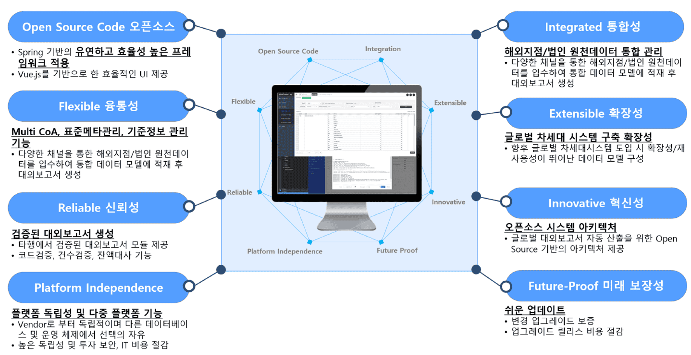
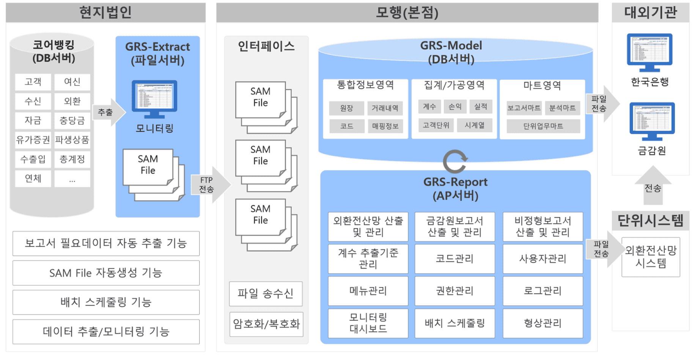
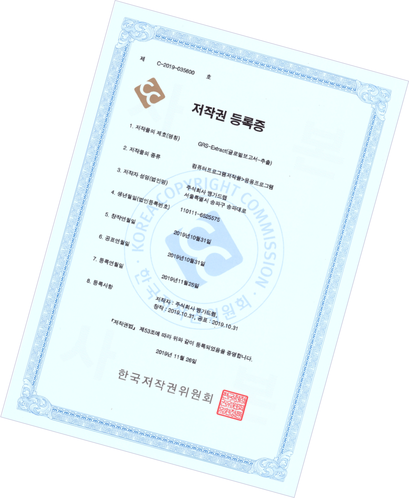

G.R.S
(Global Report System)
마트, 표준계수, 대외보고서 등
업무를 빠르게 구축해주는 솔루션
글로벌 대외 보고서 시스템(GRS)은 차세대 시스템
원천으로부터 필요한 데이터 입수 및 적재하는 대외보고서
마트, 표준계수, 대외보고서의 업무를 빠르게 구축할 수 있는
솔루션입니다.
GRS 화면 예시

글로벌 대외보고서 시스템화를 지원하는 GRS-Report는 오픈소스
기반 Framework을 채택하여 개발생산성 및 재사용성이 뛰어나고,
검증된 대외보고서 모듈을 제공하여 현업의 업무를 경감하는
글로벌 대외보고서 특화 솔루션입니다.

GRS 솔루션은 현지 계정시스템 원천데이터 추출을
위한 GRS-Extract, 대외보고용 통합 데이터 모델을
지원하는 GRS-Model 및 금감원/외환전산망보고서
화면인 GRS-Report로 구성됩니다.
GRS · FAQ
Q.
프로그램 개발 시간을 단축할 수 있습니다.
A.
로직(Microflow), 데이터 모델(Domain Model), UX(Atlas UI)를 Drag & Drop 방식으로 쉽고 빠르게 개발하고, 다양한 비즈니스 관계자의 협업을 지원합니다.
Q.
데이터 정합성을 확보할 수 있습니다.
A.
로직(Microflow), 데이터 모델(Domain Model), UX(Atlas UI)를 Drag & Drop 방식으로 쉽고 빠르게 개발하고, 다양한 비즈니스 관계자의 협업을 지원합니다.
Q.
수기 데이터 입력화면을 제공합니다.

A.
로직(Microflow), 데이터 모델(Domain Model), UX(Atlas UI)를 Drag & Drop 방식으로 쉽고 빠르게 개발하고, 다양한 비즈니스 관계자의 협업을 지원합니다.
Q.
데이터 요건 변경에 유연한 대응을 할 수 있습니다.
A.
로직(Microflow), 데이터 모델(Domain Model), UX(Atlas UI)를 Drag & Drop 방식으로 쉽고 빠르게 개발하고, 다양한 비즈니스 관계자의 협업을 지원합니다.
글로벌 대외보고서 시스템(GRS)은 한국저작권위원회에
소프트웨어저작권으로 등록되어 있는
뱅가드랩만의 독창적인 솔루션입니다
